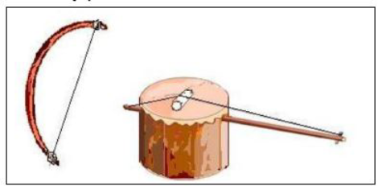
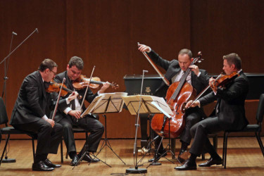

String Instruments
String instruments are musical instruments that have strings. They produce sound by plucking, strumming, or rubbing the strings. String instruments can have one, two, or more strings.
A string instrument with one or two strings is called a fiddle. There are different types of string instruments found among the Kenyan communities, each with a specific community of origin.
String Instruments and Their Communities of Origin
| String Instrument | Community Of Origin |
|---|---|
| Shiriri or ishiriri or silili | Abaluhya |
| Litungu | Abaluhya |
| Limoyi | Abaluhya |
| Ongengo | Abagusii |
| Obokano | Abagusii |
| Nderemo | Agikuyu |
| Wandindi | Agikuyu |
| Entono | Abakuria |
| Ekegogo | Abakuria |
| Iritungu | Abakuria |
| Orutu | Luo |
| Uta | Mijikenda |
| Uta wa wathi | Akamba |
| Mbeve | Akamba |
| Adeudeu | Iteso |
| Mwazigizi or zeze | Taita |
| Kimengeng | Kalenjin |
| Pukan | Pokot |
| Chepkongo/chemonge | Kipsigis |
| Nyatiti Luo | Luo |
Fiddle
Fiddles are string instruments that have one or two strings.
Fiddles and Their Communities
| Fiddle | Community |
|---|---|
| Orutu | Luo |
| Mbeve | Akamba |
| Ekegogo | Abakuria |
| Mwazigizi or zeze | Taita |
| Ageregeret | Iteso |
| Ishiriri | Abaluhya |
| Wandindi | Agikuyu |
| Kimeng'eng' | Kalenjin |
| Ong'eng,o or Otete | Abagusii |
Parts of a Fiddle and Their Functions
- Arm/neck - for holding and supporting the instrument when playing it.
- String - it is plucked or strummed to produce sound.
- Resonator - makes the sound louder.
- Membrane/skin - used to cover the resonator.
- Bridge - used to make the sound clearer by separating the string from the skin or membrane.
- Tuning peg - used to loosen or tighten the strings to produce the desired sound.
- Bow - used to play the instrument.

Tuning a Fiddle
Tuning is the process of adjusting the pitch of one or many tones of a musical instrument or getting it ready so that it is played it will sound at the correct pitch. String instruments are tuned to produce the desired sound.
To tune a fiddle, identify the string and also identify the sound that you desire to produce. A fiddle can be tuned by:
- Loosening the tuning peg
- Tightening the tuning peg
Care and Maintenance of String Instruments
- Dust the parts of the instruments using a piece of cloth. Handle the string with care.
- Always use the arm of the instrument when carrying it.
- Always check your string instrument before playing it.
- Replace worn out or damaged parts of a string instrument.
- Store it in a dry place free from dust and moisture.
- Keep your instrument away from dust by putting it in a protective bag.
- String instruments can be stored by hanging them on a wall or placing them in a cool and dry place where people cannot step on them.
- Avoid storing your instrument near walking paths because people passing by may knock them.
Note: When string instruments are cared for and maintained well, they last longer and produce good sound.
Techniques of Playing String Instruments
-
Bowing
Rubbing the instrument using a bow. A bow is made using a sisal thread tied on both ends of a curved stick.
Types of musical bow:
- Ground bow - e.g., Nderemo by Kikuyu
- Mouth bow - e.g., Obokano by Kuria
- Hunters bow - e.g., Entono by Kuria
-
Plucking
Involves pulling and releasing the string using the fingers.
-
Holding
Every string instrument has a specific way in which it is held when playing. When a string instrument is not properly held when playing, it may not produce the desired sound.
Making of a Fiddle (Project)
- Collect tools and materials
- Making the arm or neck
- Fixing the tuning peg
- Preparing the resonator
- Fixing the arm or neck to the resonator
- Fixing the string
- Preparing the bridge
- Preparing the bow
- Tuning and play to test
Playing in an Instrumental Ensemble
An ensemble is a group of people who perform instrumental or vocal music together. An instrumental ensemble consists of a group of instruments being played together, which can be percussion instruments, wind instruments, or string instruments.

Appreciating the Role of String Instruments
- String instruments are used to accompany songs.
- String instruments are used to provide rhythm in music.
- String instruments are used to provide melody in music.
- String instruments are used to provide harmony in music.
- String instruments are used to provide accompaniment in music.
Conclusion
String instruments are musical instruments that have strings. They produce sound by plucking, strumming, or rubbing the strings. String instruments can have one, two, or more strings. String instruments are used to accompany songs, provide rhythm, melody, harmony, and accompaniment in music.